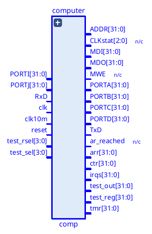
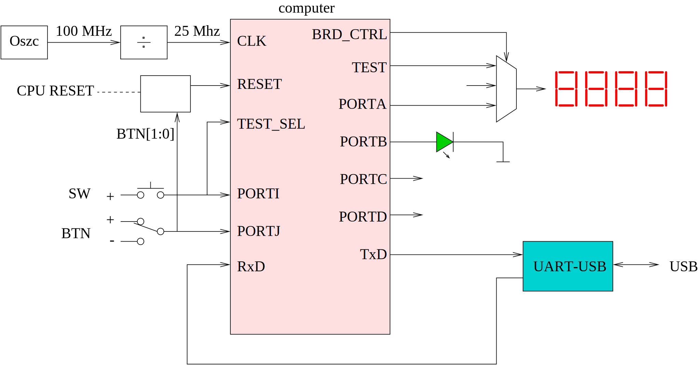
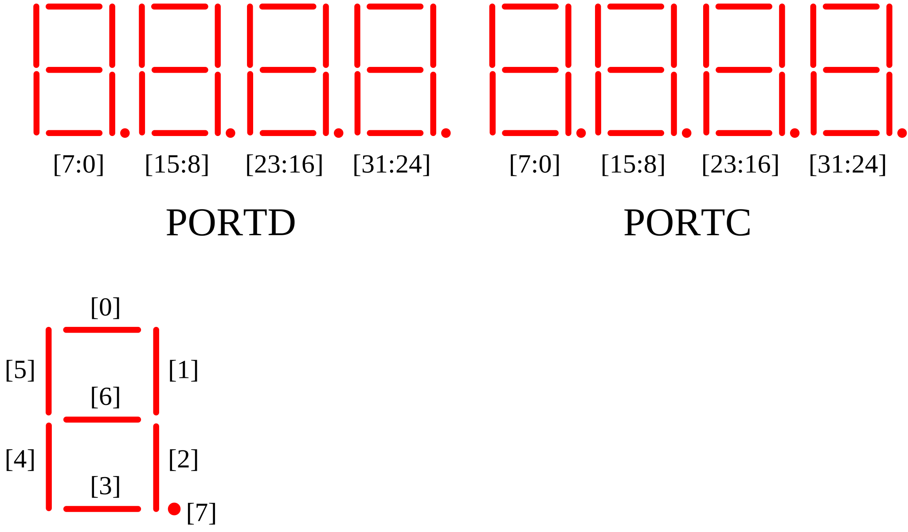
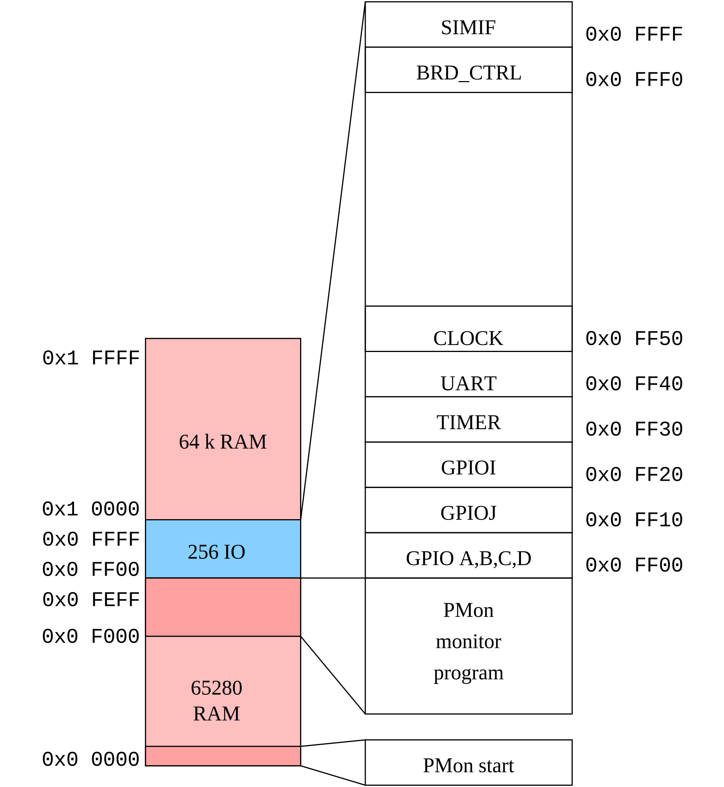

Index | Fejlesztés Development | CPU | Számítógép Computer | Assembler | Monitor | Függvények Library
Perifériák: Peripherals: GPIO | IdőzítőTimer | UART | Board Control | ÓraClock
FPGA megvalósítás: FPGA implmenetation: Nexys4DDR | Boolean | LogSys
A mikroprocesszort kiegészítve néhány alkatrésszel, mikroszámítógépet alakítunk ki. By adding a few components to the microprocessor, we create a microcomputer.

A processzort memóriával, GPIO áramkörökkel, órával, időzítővel és UART-al, az eszközöket összekötő buszt pedig címdekóderrel egészítjük ki. A clk bemenet a számítógép, egyúttal a CPU órajele is. Az FPGA megvalósításban a clk bemenetre 25 MHz frekvenciájú órajelet kötünk. The processor is supplemented with memory, GPIO circuits, clock, timer and UART, and the bus connecting the devices is supplemented with address decoder. The clk input drives the computer, and also the CPU. In the FPGA implementation, a 25 MHz clock is connected to the clk input.
A processzor memória illesztőjére kapcsolódó memória fogja tárolni a futtatott programot, valamint a feldolgozott adatokat. A memóriát az FPGA-n alakítjuk ki, a lefordított program kódját pedig beillesztjük az alkatrészbe. The memory connected to the processor's memory interface will store the running program and the processed data. The memory is designed on the FPGA, and the compiled program code is inserted into the component.
A memória kapacitása kártyától függően 64, vagy 128 Kszó, a címzéshez így 16, vagy 17 bitre van szükség. Minden szó 32 bites. The memory capacity is 64 or 128 Kwords depending on the board, so 16 or 17 bits are required for addressing. Each word is 32 bits.
A külvilággal való kapcsolattartást a memória illesztőre kapcsolt GPIO (General Purpose Input Output) áramkörök valósítják meg. Communication with the outside world is achieved by GPIO (General Purpose Input Output) circuits connected to the memory interface.
A kimeneti kivezetéseket egy négy regiszterből álló “memória” valósítja meg, amelyből mind a négy regiszter kimenetei ki vannak vezetve. A számítógép kimenetei a PORTA, PORTB, PORTC, PORTD nevet viselik, és a GPIO kimeneti adatregiszterének (ODR) értéke jelenik meg rajtuk. A regiszterek tartalma írható (memória írás utasítással), valamint vissza is olvasható a tartalmuk. The output pins are implemented by a “memory” consisting of four registers, from which the outputs of all four registers are derived. The computer outputs are named PORTA, PORTB, PORTC, PORTD, and the value of the GPIO output data register (ODR) is displayed on them. The contents of the registers can be written (with a memory write instruction), and their contents can be read back.
A 4 regiszter 4 egymást követő címen található, a kezdőcímet a címdekóder határozza meg: The 4 registers are located at 4 consecutive addresses, the starting address is determined by the address decoder:
| OffszetOffset | Port | GPIO regiszterGPIO register |
|---|---|---|
| 0 | PORTA | GPIOA.ODR |
| 1 | PORTB | GPIOB.ODR |
| 2 | PORTC | GPIOC.ODR |
| 3 | PORTD | GPIOD.ODR |
Bemenetként szintén regisztert használunk. A regiszter olvasásakor a bemeneti vezetékek állapota eltárolódik a regiszterben (mintavétel), a processzor ennek a tartalmát fogja megkapni. A bemeneti GPIO áramkörben egy regiszter van, így egy 32 bites bemenő adathoz lehet vele hozzáférni. A számítógépben két ilyen áramkört kapcsolunk a buszra, így két bemeneti portot kapunk: We also use a register as an input. When reading the register, the state of the input wires is stored in the register (sampling), the processor will receive its content. The input GPIO circuit has a register, so it can access a 32-bit input data. In the computer, we connect two such circuits to the bus, so we get two input ports:
| Port | GPIO regiszter |
|---|---|
| PORTI | GPIOI.IDR |
| PORTJ | GPIOJ.IDR |
Az időzítő egy 32 bites bináris előre számlálót tartalmaz, amely a számítógéptől független órajellel léptethető. Az FPGA megvalósításnál 1 MHz-es órajelet használunk, míg a verilog szimulációban az időzítő The timer contains a 32-bit binary up-counter that can be stepped by a clock signal independent of the computer . In the FPGA implementation, a 1 MHz clock signal is used, while in the verilog simulation the timer receives a clock signal of frekvenciájú órajelet kap. A számlálás ki, illetve bekapcsolható, nullától egy beállítható végértékig tart, melynek az elérése után a számláló nullázódik. A végérték elérését a túlcsordulás kimenet 1 értékűvé válása jelzi, a kimenetet szoftverből kell törölni, törlésig 1 marad. frequency. The counting can be turned on or off, and it goes from zero to the end value which can be set, after which the counter is reset. Reaching the end value is indicated by the overflow output becoming 1, the output must be cleared from software, and remains 1 until cleared.
OffszetOffset: 0
KezdőértékInitial value: 0
A regiszter tartalma vezérli a számláló működését. The contents of the register control the operation of the counter.
OffszetOffset: 1
KezdőértékInitial value: 0
A regiszter a számlálás végértékét állítja be. Amikor a számláló értéke az AR regiszter tartalmával egyezik, a túlcsordulás kimenet 1 lesz, a számláló a következő lépéskor nullázódik. The register sets the end value of the count. When the counter value matches the contents of the AR register, the overflow output will be 1, and the counter will be reset to zero at the next step.
OffszetOffset: 2
KezdőértékInitial value: 0
A számláló aktuális értékét tartalmazó regiszter. Írás művelettel a számláló értéke megváltoztatható. A register containing the current value of the counter. The value of the counter can be changed by a write operation.
OffszetOffset: 3
KezdőértékInitial value: 2
Az időzítő állapotáról tartalmaz információt. It contains information about the timer status.
Univerzális aszinkron soros adó- vevő áramkör. Az áramkör vevő oldala egy 16 elemű belső FIFO-val van ellátva, amely kiolvasás előtt az utolsó 15 vett adatot tudja tárolni. Universal asynchronous serial transceiver circuit. The receiver side of the circuit is equipped with a 16-element internal FIFO, which can store the last 15 received data before reading it out.
OffszetOffset: 0
KezdőértékInitial value: 0
8 bites adat regiszter, írása elindítja a küldő műveletet. Olvasása a FIFO legrégebbi tárolt karakterét adja. Olvasáskor a [31:8] bitek értéke 0 lesz. 8-bit data register, writing it starts the send operation. Reading it gives the oldest stored character of the FIFO. When reading, bits [31:8] will be set to 0.
Offset: 1 KezdőértékInitial value: 0
OffszetOffset: 2
KezdőértékInitial value: 0
Csak olvasható regiszter, a vevő áramkör állapotáról tartalmaz információt. Read-only register, it contains information about the state of the receiver circuit.
OffszetOffset: 3
KezdőértékInitial value: 1
Csak olvasható regiszter, a küldő áramkör állapotáról tartalmaz információt. Read-only register, contains information about the state of the sending circuit .
OffszetOffset: 4
KezdőértékInitial value: 216
Írható és olvasható regiszter, amelynek az értéke a bit továbbítás sebességét állítja be (jelelési sebesség). A tartalma azt adja meg, hogy egy bit továbbításának az ideje mennyi, az áramkörre kapcsolt órajel periódusainak a számában. Az átvitel sebessége: A readable and writable register whose value sets the bit transmission speed (signaling rate). Its contents specify the time it takes to transmit one bit, in the number of periods of the clock signal connected to the circuit. The transmission speed:
ahol az fCLK az áramkör bemenetére kötött órajel frekvenciája. 25 MHz-es órajel esetén a 216-os kezdőérték ~115200 baud sebességet eredményez. where fCLK is the frequency of the clock signal connected to the input of the circuit. For a 25 MHz clock, a starting value of 216 results in a baud rate of ~115200.
A periféria regisztereivel a számítógép kimeneti portjainak felhasználási módja vezérelhető. The peripheral registers control how the computer's output ports are used.
OffszetOffset: 0
KezdőértékInitial value: 0
A kimeneti portok (PORTA...PORTD) felhasználását vezérli. Hatása csak az FPGA megvalósítások esetén van. Controls the usage of the output ports (PORTA...PORTD). It only has an effect on FPGA implementations.
Ez a periféria szövegek kiírására használható, abban az esetben, ha szimuláljuk az áramkör viselkedését egy verilog szimulátorral. A perifériának egy regisztere van. A regiszterbe először egy parancsot, majd egy paramétert kell a szoftvernek írnia. Ha a parancs értéke ‘p’ (112, 0x70), akkor a második, paraméter értéket az illesztő ASCII kódnak tekinti, és a kódnak megfelelő betűt kiírja a szimulátor felületére. This peripheral can be used to print texts, in case the circuit behavior is simulated with a verilog simulator. The peripheral has one register. The software must first write a command and then a parameter to the register. If the command value is ‘p’ (112, 0x70), then the second, parameter value is considered as an ASCII code and the letter corresponding to the code is printed on the simulator interface.
OffszetOffset: 0
KezdőértékInitial value: 0
Parancs és adat regiszter. Command and data register.
A periféria egy 32 bites előre számlálót tartalmaz, amelynek a működési frekvenciája (vagyis a lépések közötti idő) egy előosztó segítségével beállítható. The peripheral contains a 32-bit up-counter, whose operating frequency (i.e. the time between steps ) can be set using a prescaler.
Ezen kívül még 14 darab 32 bites hátra számlálót is használhatunk, amlyeknek a frekvenciája az óra számlálóéval egyezik meg. Ezek a számlálók csak akkor lépnek, ha nem nulla az értékük, a 0 elérésekor a számlálás leáll. In addition, we can use 14 32-bit down counters whose frequency is the same as that of the clock counter. These counters only move if their value is not zero, and counting stops when 0 is reached.
OffszetOffset: 0
KezdőértékInitial value: 0
A regiszter az óra számláló értékét tartalmazza, írható és olvasható. The register contains the clock counter value, it can be written and read.
OffszetOffset: 1
KezdőértékInitial value: 0
A PRE regiszter értéke határozza meg az óra működési frekvenciáját, két lépés között CNT+1 bemeneti órajel telik el: The value of the PRE register determines the operating frequency of the clock, CNT+1 input clock signal elapses between two steps:
Ha a rendszer órajele 25 MHz, ahhoz, hogy az óra 1 ms időnként lépjen egyet, az előosztó regiszter értékét 24999-re kell állítani. Az óra csak akkor működik, ha a PRE nem 0 értékű, így 0-ra állítással az óra megállítható. If the system clock is 25 MHz, in order for the clock to move once every 1 ms, the value of the prescaler register should be set to 24999. The clock only works if the PRE is not 0, so setting it to 0 stops the clock.
OffszetOffset: 2…15
KezdőértékInitial value: 0
Hátra számlálók, amelyeknek a működési frekvenciája az óra regiszterével egyezik. A számlálók csak akkor lépnek, ha nem 0 az értékük. A 0 elérésekor az egyes számlálók megállnak. Countdown counters whose operating frequency matches the clock register. The counters only advance if their value is not 0. When 0 is reached, the backcounter stops.
A számítógéphez az FPGA kártyán elérhető eszközök vannak hozzákötve megfelelő illesztő áramkörökön keresztül. The devices available on the FPGA board are connected to the computer via appropriate interface circuits.

A felhasznált kártyákon az oszcillátor 100 MHz-es órajelet állít elő. Ebből a számítógép 25 MHz-es órajelét egy frekvenciaosztó áramkör készíti el. On the cards used, the oscillator produces a 100 MHz clock signal. From this, the computer's 25 MHz clock signal is generated by a frequency divider circuit.
A bemeneti eszközök (BTN nyomógombok, SW kapcsolók) illesztésére pergésmentesítő áramkört alkalmazunk. A debounce circuit is used to process signals from the input devices (BTN pushbuttons, SW switches).
A kimeneti eszközök a kártyák LED-jei és hétszegmenses kijelzői. A kijelző multiplex meghajtást igényel, ezt egy több üzemmódban is használható kódátalakító működteti. A megjelenített adatok a számítógép különböző kimeneteiről érkezhetnek, ezek közül egy multiplexer választja ki a megjelenített értéket. The output devices are the LEDs and seven-segment displays of the boards. The display requires multiplex drive, which is operated by a multi-mode code converter. The displayed data can come from different outputs of the computer, from which a multiplexer selects the displayed value.
A számítógéppel az UART periférián keresztül kommunikálhatunk, amely a kártya UART-USB átalakítóján keresztül érhető el. We can communicate with the computer via the UART peripheral, which is accessible via the UART-USB converter of the board.
A CPU reset-elése elvégezhető a kártya CPU reset nyomógombjával, ha a kártya rendelkezik vele. The CPU can be reset using the CPU reset button on the board, if the board has one.
Másik módszer, a BTN[1] nyomógomb (Nexys4DDR kártyán BTND) nyomva tartása közben a BTN[0] gomb (Nexys4DDR kártyán a BTNC) megnyomása. Ez a módszer csak a BTN[0] egyszeri megnyomásakor működik. A következő reset előállításához a BTN[1] gombot fel kell engedni, majd újra nyomva tartva lehet a BTN[0] megnyomásával reset-elni. Another method is to press and hold the BTN[1] button (BTND on Nexys4DDR card) while pressing the BTN[0] button (BTNC on Nexys4DDR card). This method only works when BTN[0] is pressed once. To generate the next reset, the BTN[1] button must be released, and then the BTN[0] button can be pressed and held again to reset.
A hétszegmenses kijelző egy 32 bites szám értékét tudja megjeleníteni hexadecimális számrendszerben. A kijelzőn 16 különféle érték jeleníthető meg, ezeket a SW[7:4] kapcsolókon beállított bináris (0-15) értékkel, vagy a BRD_CTRL periféria OUT regiszterének [7:4] bitjeivel (ha OUT[0]==1) választhatjuk ki. The seven-segment display can display a 32-bit number in hexadecimal. The display can display 16 different values, which can be selected by the binary (0-15) values set on the SW[7:4] switches, or by the [7:4] bits of the BRD_CTRL peripheral OUT register (if OUT[0]==1).
| SW[7:4] vagyor BRD_CTRL.OUT[7:4] | Megjelenített értékDisplayed value |
|---|---|
| 0000 (0) | PORTA |
| 0001 (1) | PORTB |
| 0010 (2) | PORTC |
| 0011 (3) | PORTD |
| 0100 (4) | A CPU órajelével léptetett 32 bites bináris számláló értéke The value of a 32-bit binary counter that is incremented by the CPU clock |
| 0101 (5) | Az időzítő AR regiszterének az értékeThe value of the timer AR register |
| 0110 (6) | Az időzítő CNTR regiszterének az értékeThe value of the timer's CNTR register |
| 0111 (7) | Az időzítő CTRL regiszterének az értékeThe value of the timer's CTRL register |
| 1000 (8) | A CPU teszt kimenetének az értéke (*)The value of the CPU test output (*) |
| 1001 (9) | A CPU kiválasztott regiszterének az értéke (**)The value of the selected register of the CPU (**) |
| 1010 (10) | A kijelző direkt meghajtása (szegmens mód) a PORTC, PORTD kimenetekkel (***)Direct display drive (segment mode) with PORTC, PORTD outputs (***) |
| 1011 (11) | 0 |
| 1100 (12) | A processzor megszakításkérő bemeneteire kötött értékek (jelenleg nem használt)Values bound to the processor interrupt request inputs (currently unused) |
| 1101 (13) | A CPU adatbusz bemeneteinek értékeCPU data bus inputs value |
| 1110 (14) | A CPU adatbusz kimeneteinek értékeCPU data bus outputs value |
| 1111 (15) | A CPU címbusz értékeCPU address bus value |
(*) A SW[11:8] kapcsolókon beállított 4 bites bináris érték választja ki, hogy a CPU teszt kimenetein milyen értékek jelenjenek meg (P2 CPU esetén nincs megvalósítva). (*) The 4-bit binary value set on the SW[11:8] switches selects the values to be displayed on the CPU test outputs (not implemented in the case of P2 CPU).
(**) A SW[3:0] kapcsolókon beállított 4 bites bináris érték (0-15) választja ki, hogy a CPU melyik regiszterének az értéke jelenjen meg a kijelzőn. (**) The 4-bit binary value (0-15) set on the SW[3:0] switches selects which register of the CPU is displayed.
(***) A PORTD 32 bitje a kijelző 0-3 számjegyének 32 LED-jét vezérli (4-7 karakterpozíciók), míg a PORTC 32 bitje a kijelző 4-7 számjegyének (0-3 karakterpozíciók) LED-jeit működteti. (***) The 32 bits of PORTD control the 32 LEDs of the display digits 0-3 (character positions 4-7), while the 32 bits of PORTC operate the LEDs of the display digits 4-7 (character positions 0-3).
Amennyiben a kijelzendő adatként a 10-es sorszámú van kiválasztva, a kijelző meghajtó szegmens üzemmódban működik, ebben az esetben az adatot a PORTD és PORTC kimenetek szolgáltatják. If the data to be displayed is numbered 10, the display driver operates in segment mode, in which case the data is provided by the PORTD and PORTC outputs.

A számítógépbe 128 kszó RAM memória van beépítve, amely alapvetően az első 128k címen érhető el. Az első 64k utolsó 256 címe esetén azonban a címdekóder nem a memóriát, hanem helyette az IO áramköröket választja ki. Az IO áramkörök tehát a 0xFF00-0xFFFF tartományon belül használhatók. Az egyes perifériák regisztereinek kezdőcímét a memória térkép rajzáról olvashatjuk le. The computer has 128 kwords of RAM memory, which is basically accessible at the first 128k addresses. However, in the case of the last 256 addresses of the first 64k, the address decoder does not select the memory, but instead selects the IO circuits. The IO circuits can therefore be used within the range 0xFF00-0xFFFF. The starting address of the registers of each peripheral can be read from the memory map.
A RAM első 65280 szó, és a második 64 kszó méretű területén tárolhatók a felhasználói program és annak adatai. A 0xF000-0xFEFF memóriaterület kezdőértékként a PMon nevű monitorprogram kódját tartalmazza, míg a 0 címen egy vezérlésátadó utasítás van, amely bekapcsoláskor elindítja a monitort. The first 65280 words of RAM and the second 64 kwords area can store the user program and its data. The 0xF000-0xFEFF memory area contains the monitor program code called PMon as its initial value, while at address 0 there is a control transfer instruction that starts the monitor when the computer is turned on.
A monitor segítségével megvizsgálhatjuk, módosíthatjuk a memória tartalmát, beállíthatjuk a felhasználói program számára a regisztereket, valamint az UART-on keresztül betölthetjük a memóriába a felhasználói programot. A monitor egy parancssoros felhasználói felülettel (CLI) rendelkezik, amelyet az UART-on keresztül használhatunk, 115200,N,8,1 beállításokkal. The monitor allows you to examine, modify the contents of memory, set registers for the user program, and load the user program into the memory via the UART. The monitor has a command-line user interface (CLI), which can be used via the UART, with settings of 115200,N,8,1.

| CímAddress | PerifériaPeripheral | RegiszterRegister |
|---|---|---|
| 0xFFFF | SIMIF | CMD_PAR |
| 0xFFF0 | BRD_CTRL | OUT |
| 0xFF5F | CLOCK | BCNT15 |
| … | CLOCK | BCNT… |
| 0xFF52 | CLOCK | BCNT2 |
| 0xFF51 | CLOCK | PRE |
| 0xFF50 | CLOCK | CLOCK |
| 0xFF4F | UART | SREG3 |
| 0xFF4E | UART | SREG2 |
| 0xFF4D | UART | SREG1 |
| 0xFF4C | UART | SREG0 |
| 0xFF44 | UART | CPB |
| 0xFF43 | UART | TSTAT |
| 0xFF42 | UART | RSTAT |
| 0xFF41 | UART | CTRL |
| 0xFF40 | UART | DR |
| 0xFF33 | TIMER | STAT |
| 0xFF32 | TIMER | CNTR |
| 0xFF31 | TIMER | AR |
| 0xFF30 | TIMER | CTRL |
| 0xFF20 | GPIOI | IDR |
| 0xFF10 | GPIOJ | IDR |
| 0xFF03 | GPIOD | ODR |
| 0xFF02 | GPIOC | ODR |
| 0xFF01 | GPIOB | ODR |
| 0xFF00 | GPIOA | ODR |
A kártya dokumentációja elérhető a http://mazsola.iit.uni-miskolc.hu/d/fpga_nexys4ddr címen. The board's documentation is available at http://mazsola.iit.uni-miskolc.hu/d/fpga_nexys4ddr.
A kártya egy CPU RESET gombot, valamint 5 nyomógombot és 16 kapcsolót tartalmaz, a kimeneti jeleket 16 LED-en és egy 8 digites hétszegmenses kijelzőn lehet megjeleníteni. The board contains a CPU RESET button, 5 pushbuttons and 16 switches, the output signals can be displayed on 16 LEDs and an 8-digit seven-segment display.
A számítógép órajele 25 MHz. The computer's clock speed is 25 MHz.
A kapcsolók és nyomógombok pergésmentesítettek. The switches and pushbuttons are debounced.
| Kapcsoló/nyomógomb Switch/pushbutton | Számítógép portComputer port |
|---|---|
| BTNC | PORTI[0] |
| BTND | PORTI[1] |
| BTNU | PORTI[2] |
| BTNR | PORTI[3] |
| BTNL | PORTI[4] |
| SW[15:0] | PORTJ[15:0] |
A PORTI és PORTJ fel nem használt bitjeire 0 van bekötve. The unused bits of PORTI and PORTJ are set to 0.
A kártya CPU RESET feliratú nyomógombját használhatjuk a számítógép alapállapotba állítására. The CPU RESET button on the baord can be used to reset the computer.
A számítógép PORTB[15:0] kimenetei a kártya 16 LED-jére vannak bekötve. The computer's PORTB[15:0] outputs are connected to the 16 LEDs on the baord.
A számítógépben 128 kszó memória van, a memória térkép megegyezik a címdekóder fejezetben ismertetett térképpel. The computer has 128 kwords of memory, the memory map is the same as the map described in the address decoder chapter.
A kártya dokumentációja elérhető a http://mazsola.iit.uni-miskolc.hu/d/fpga_boolean címen. The board documentation is available at http://mazsola.iit.uni-miskolc.hu/d/fpga_boolean.
A kártya 4 nyomógombot, 16 kapcsolót, valamint 16 LED-et és egy 8 digites hét szegmenses kijelzőt tartalmaz. The board contains 4 pushbuttons, 16 switches, and 16 LEDs and an 8-digit seven-segment display.
A számítógép órajele 25 MHz. The computer's clock speed is 25 MHz.
A kapcsolók, LED-ek és a hétszegmenses kijelző bekötése megegyezik a Nexy4DDR kártyán megvalósított áramkörével. A nyomógombok és kapcsolók pergésmentesítettek. The connections of the switches, LEDs and the seven-segment display are the same as those implemented on the Nexy4DDR board. The pushbuttons and switches are debounced.
A kártya 16 kapcsolóval és 4 nyomógombbal rendelkezik, mivel azonban a CPU RESET számára nincs rajta dedikált nyomógomb, ezért a fent említett 2 nyomógombos módszer használható a CPU újraindítására. The board has 16 switches and 4 pushbuttons, however, since there is no dedicated pushbutton for CPU RESET, the 2 pushbutton method mentioned above can be used to reset the CPU.
| Nyomógomb/kapcsolóSwitch/pushbutton | Számítógép portComputer port |
|---|---|
| SW[15:0] | PORTJ[15:0] |
| BTN[3:0] | PORTI[3:0] |
A számítógép PORTB[15:0] kimenetei a kártya 16 LED-jére vannak bekötve. The computer's PORTB[15:0] outputs are connected to the 16 LEDs on the board.
A számítógépben 64 kszó memória található, amely a 0-0xFFFF címeken érhető el. A címdekóder fejezetben látható térképhez képest az a különbség, hogy a 0x10000-0x1FFFF címeken nincs beépített memória. The computer has 64 kwords of memory, which is accessible at addresses 0-0xFFFF. The difference compared to the map shown in the address decoder chapter is that there is no built-in memory at addresses 0x10000-0x1FFFF.
A kártya dokumentációja elérhető a http://mazsola.iit.uni-miskolc.hu/d/fpga_logsys címen. The card documentation is available at http://mazsola.iit.uni-miskolc.hu/d/fpga_logsys .
A kártya egy RST, valamint négy általános nyomógombot és 8 kapcsolót tartalmaz. A kimeneti eszközök nyolc darab 3 színű LED és egy négy digites hétszegmenses kijelző. The board contains an RST, four general pushbuttons and 8 switches. The output devices are eight 3-color LEDs and a four-digit seven-segment display.
A számítógép órajele 25 MHz. The computer's clock speed is 25 MHz.
A nyomógombok és kapcsolók pergésmentesítettek. The buttons and switches are debounced.
A számítógép az RST nyomógombbal állítható alaphelyzetbe. The computer can be reset using the RST button.
| Nyomógomb/kapcsolóSwitch/pushbutton | Számítógép portComputer port |
|---|---|
| SW[7:0] | PORTJ[7:0] |
| BTN[[0] | PORTI[3:0] |
Az LD0..LD7 LED-ek mindegyike három színű, vagyis egy zöld, egy kék és egy piros LED-et is tartalmaz. A számítógép PORTB[23:0] kimenetei segítségével működtethetők a LED-ek: The LEDs LD0..LD7 each have three colors, that is, a green, a blue and a red LED. The LEDs can be operated using the computer's PORTB[23:0] outputs:
| Számítógép portComputer port | LED |
|---|---|
| PORTB[7:0] | ZÖLD7 .. ZÖLD0GREEN7 .. GREEN0 |
| PORTB[15:8] | PIROS7 .. PIROS0RED7 .. RED0 |
| PORTB[23:16] | KÉK7 .. KÉK0BLUE7 .. BLUE0 |
A hétszegmenses kijelzőn megjelenő érték a SW[7:4] kapcsolókon beállított 4 bites bináris kód segítségével választható ki. Mivel a kijelző csak 4 digites, ezért a kiválasztott adatnak csak az alsó 16 bitje jelenik meg. Szegmens mód esetén (SW[7:4]==10), a PORTC kimenetek határozzák meg a kijelző 32 LEDjének az állapotát, a PORTD kimenetek nincsenek hatással a kijelzőre. The value displayed on the seven-segment display can be selected using the 4-bit binary code set on the SW[7:4] switches. Since the display is only 4 digits, only the lower 16 bits of the selected data are displayed. In segment mode (SW[7:4]==10), the PORTC outputs determine the state of the 32 LEDs of the display, the PORTD outputs have no effect on the display.
A számítógépben 128 kszó memória van, a memória térkép megegyezik a címdekóder fejezetben ismertetett térképpel. The computer has 128 kwords of memory, the memory map is the same as the map described in the address decoder chapter.